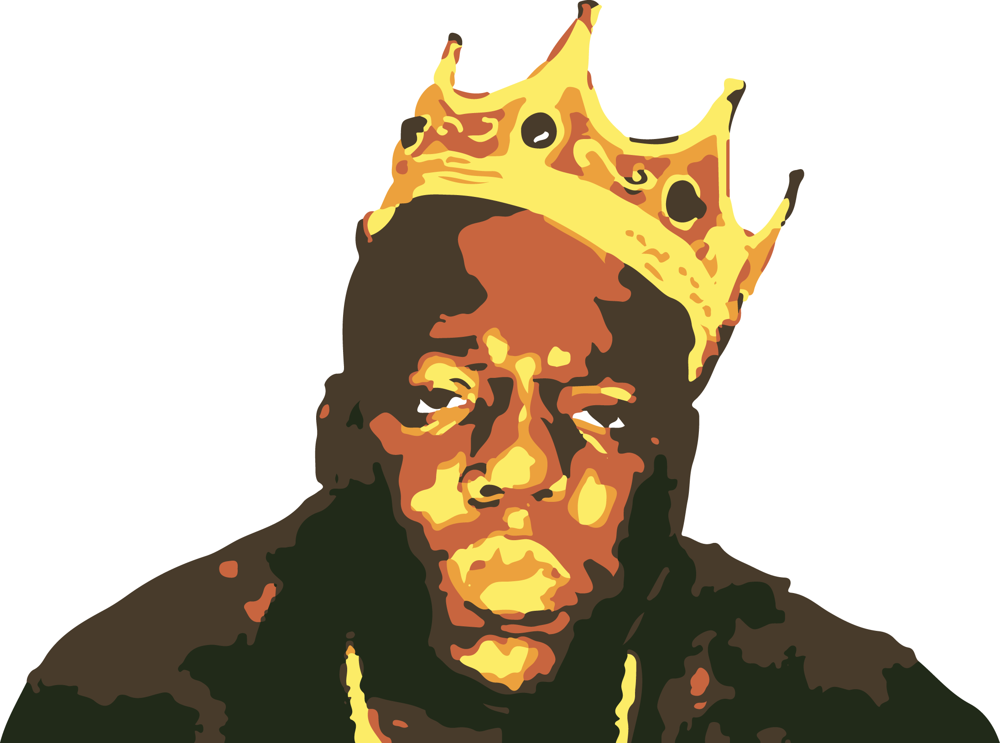
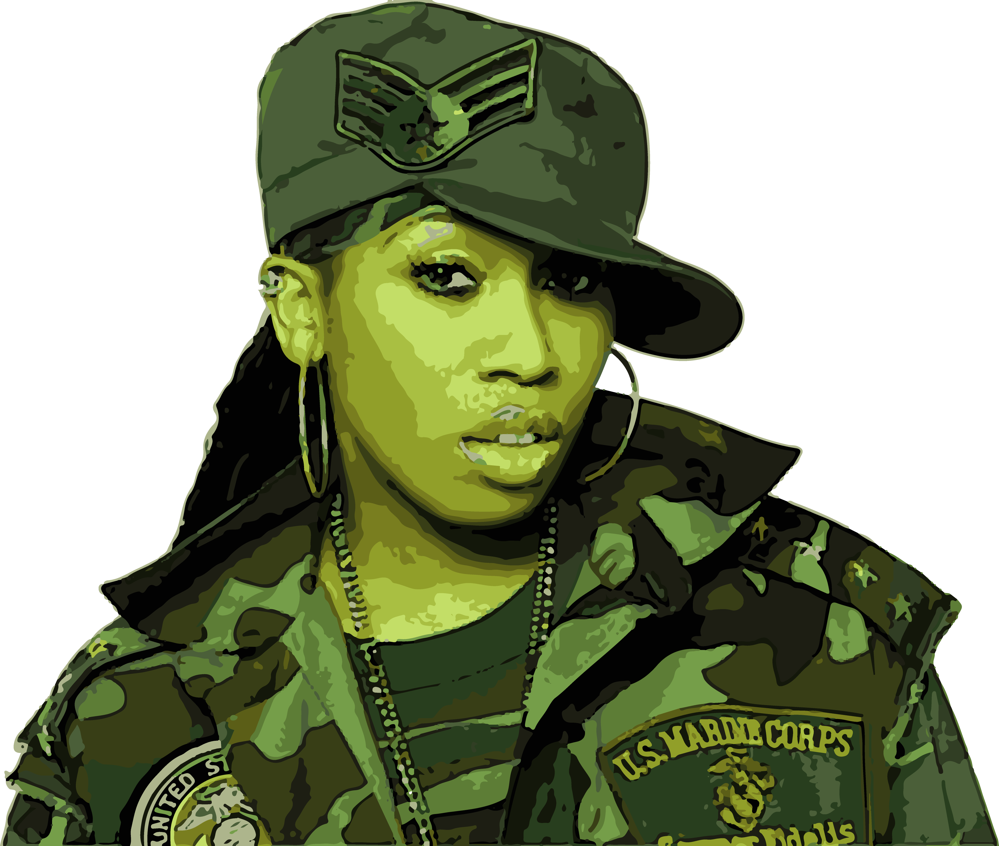
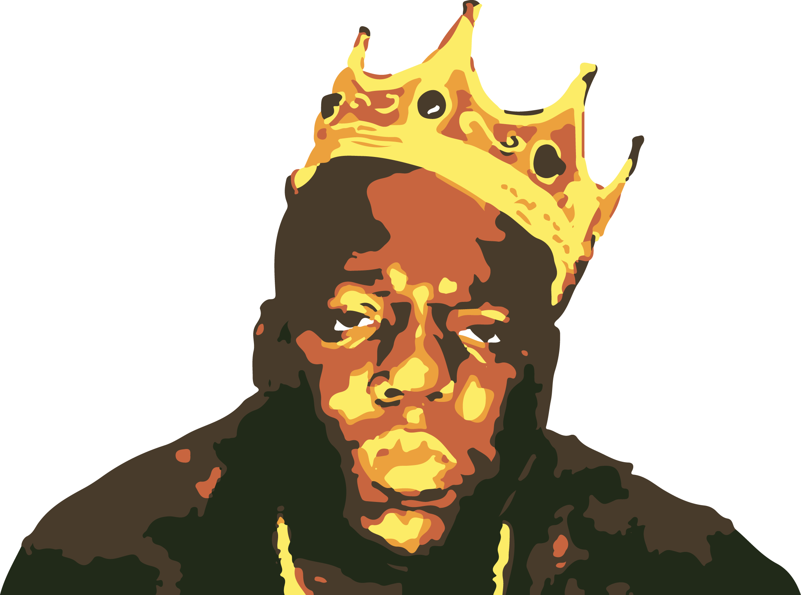
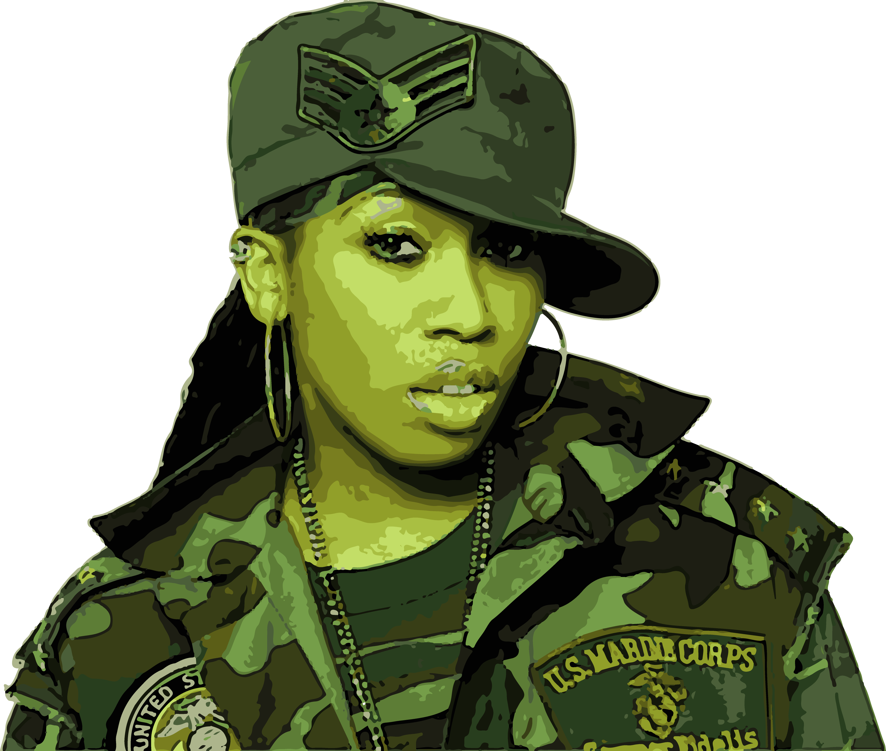

In 1990, Public Enemy’s Fear of a Black Planet was a significant success with music critics and consumers. The album played a key role in hip hop’s mainstream emergence in 1990, dubbed by Billboard editor Paul Grein as “the year that rap exploded.” MC Hammer hit mainstream success with the multi platinum album Please Hammer, Don’t Hurt ‘Em. The record reached #1 and the first single, “U Can’t Touch This” charted on the top ten of the Billboard Hot 100. MC Hammer became one of the most successful rappers of the early nineties and one of the first household names in the genre. The album raised rap music to a new level of popularity.
The East Coast–West Coast hip hop rivalry was a feud from 1991 to 1997 between artists and fans of the East Coast hip hop and West Coast hip hop scenes in the United States, especially from 1994 to 1997. Focal points of the feud were East Coast-based rapper The Notorious B.I.G. (and his New York-based label, Bad Boy Records) and West Coast-based rapper Tupac Shakur (and his Los Angeles-based label, Death Row Records)
After N.W.A. broke up in 1992, Dr. Dre released The Chronic. As well as helping to establish West Coast gangsta rap as more commercially viable than East Coast hip hop, this album founded a style called G-Funk, which soon came to dominate West Coast hip hop. The style was further developed and popularized by Snoop Dogg’s 1993 album Doggystyle. However, hip hop was still met with resistance from black radio, including urban contemporary radio stations.
In the early 1990s, the Wu-Tang Clan revitalized the New York hip hop scene by pioneering an East coast hardcore rap equivalent in intensity to what was being produced on the West Coast. The success of artists such as Nas and Notorious B.I.G. during 1994–95 cemented the status of the East Coast during a time of West Coast dominance. In a March 2002 issue of The Source Magazine, Nas referred to 1994 as “a renaissance of New York [City] Hip-Hop.”
In the late 1990s, female fronted hip-hop was all the rage. Missy Elliot’s debut album “Supa Dupa Fly” came out in 1997 and she continued to drop highly successful records every couple of years. Having broken barriers as a successful female producer, Missy would go on to become the highest selling female rapper of all time.
 


